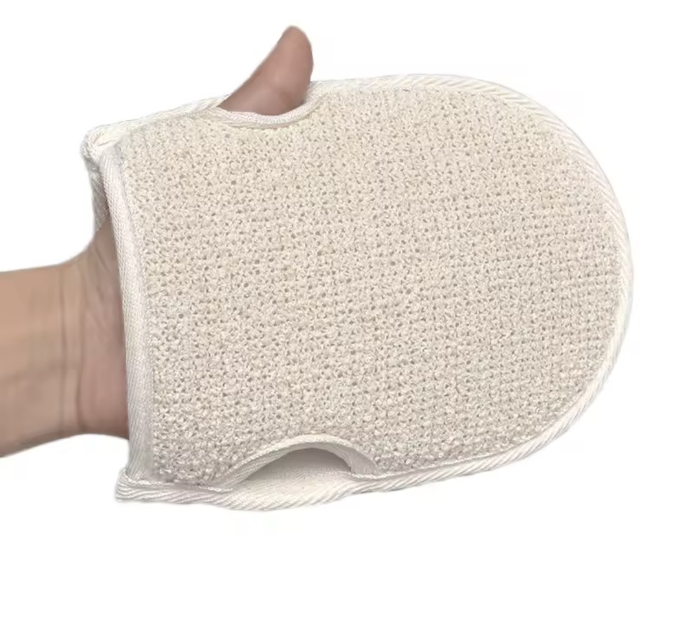

A natural fibre mitt that lathers gently and rinses clean — easy to hold even with wet, soapy hands.

Regular sponges can get slippery fast, which is awkward when your grip isn't what it used to be. This one is shaped as an open-ended mitt rather than a loose sponge, so it stays on the hand instead of needing to be gripped the whole time.
Rinse and hang to dry after each use rather than leaving it balled up in the shower — it lasts noticeably longer that way.
Where to buy: https://aliexpress.com